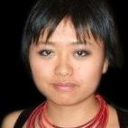
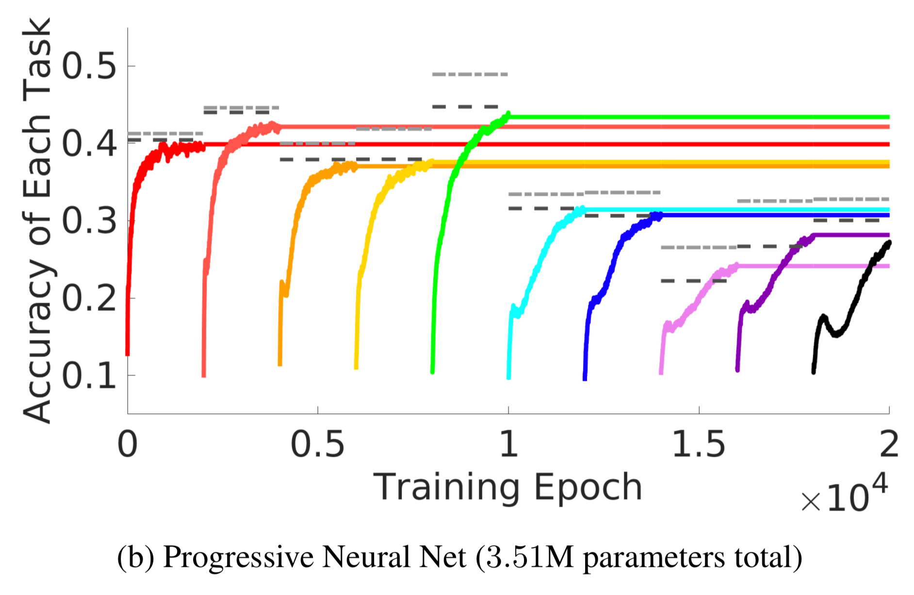
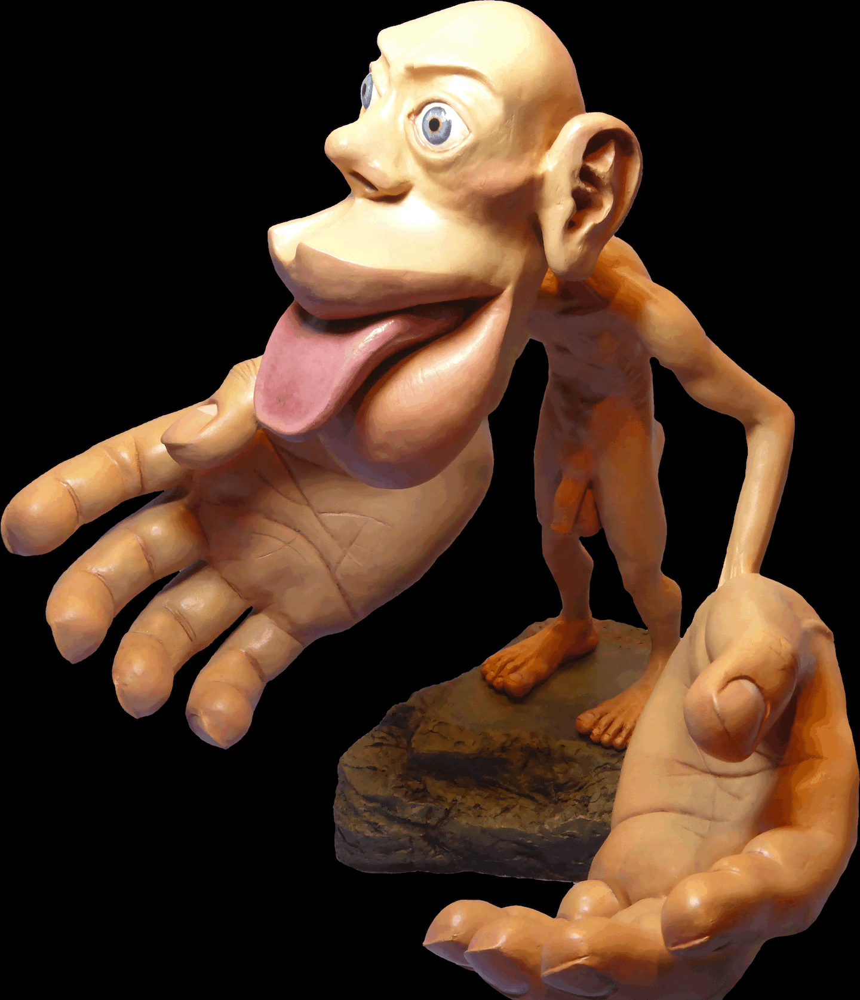
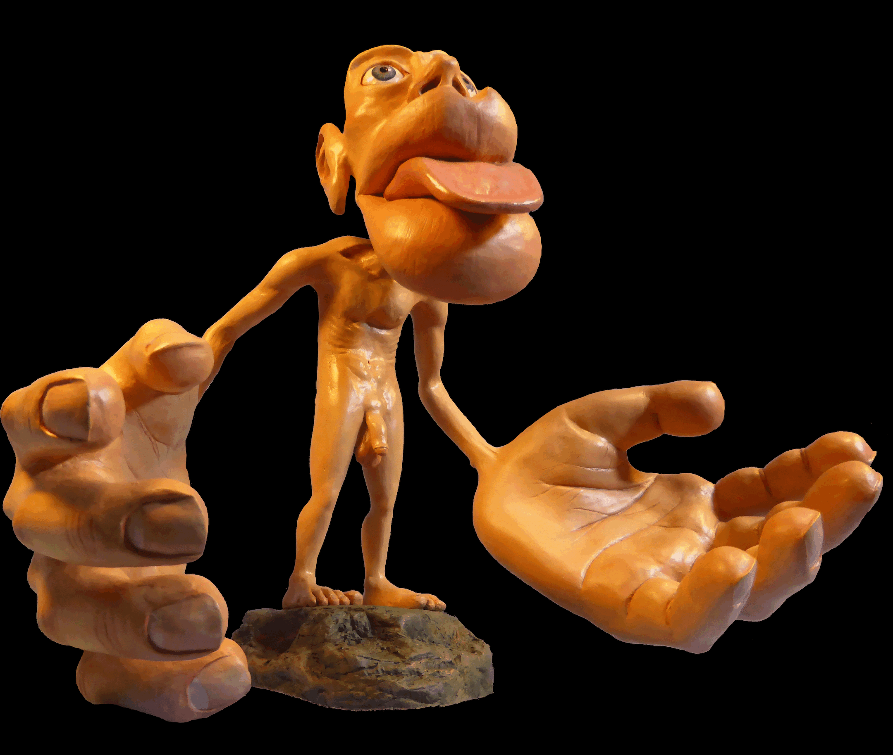
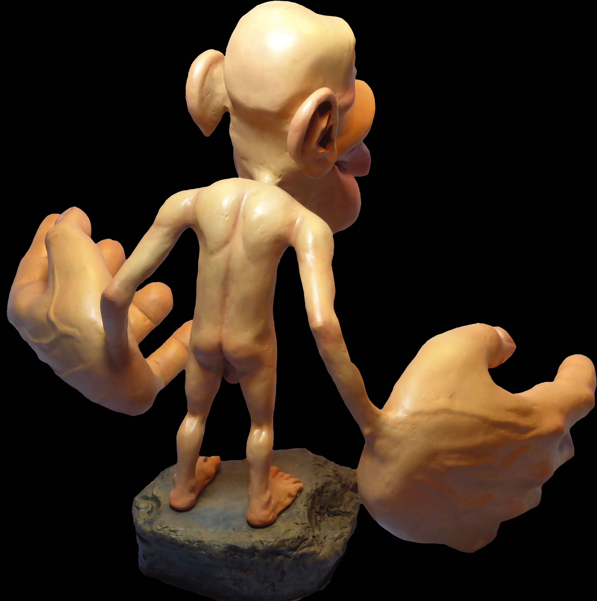
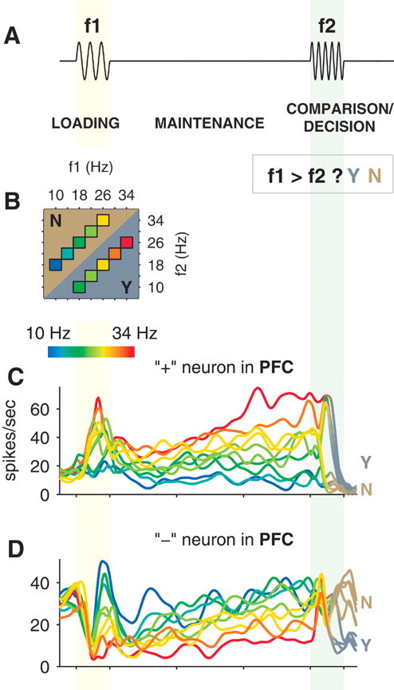

### Progressive Learning <p style="font-size:0.875em"> Ronak Mehta <br> Microsoft Research Team Essex <br> Summer Internship 2020 <br> August 18, 2020 </p> .center[ ] <!-- .center[] --> <p style="font-style: italic;">Slides adapted from "Transmedia progressive learning" by Joshua Vogelstein.</p> --- ### What is Progressive Learning? -- - Given a .ye[set of tasks] (image classification, text classification, regression, hypothesis testing)... -- - and some .ye[side information] (pre-trained models (ResNet, BERT), expert/oracle advice)... -- - perform better on each task by virtue of the other tasks and information. --- #### Make ML mirror Neurobiology -- - Omnidirectional transfer (multitask learning) - Sequential updates (online/reinforcement learning) - Robustness to adversarial data/tasks - Adhering to time/capacity contraints (PAC learning) - Selective plasticity (neurobiology) - Zero-shot or Few-shot learning --- ### Our Goals -- - A mathematically formal statement of progressive learning, and how it is done. -- - A general purpose algorithm. -- - An extention for practical, "harder" scenarios. --- ### Our Goals - .ye[A mathematically formal statement of progressive learning, and how it is done.] - A general purpose algorithm. - .ye[An extention for practical, "harder" scenarios.] --- ### Previous Approach Let $x$ be some input, $y$ be a label, and $h$ be classifier that hopes $h(x)$ is close to $y$. --- ### Decompose Classifier  --- ### Key Idea - Transformers from other tasks (or side information) can be used as additional representations. - This is .ye[ensembling representations]. --- ### Ensemble Representations  --- #### Project 1: Theory of the Task Learnable - What is a task? - What is the mathematical set up of transfer, multitask, and progressive Learning? - How do we measure the extent of transfer, multitask, and progressive Learning? - What exactly (formally) is being transferred between tasks (representations of data)? - Theorems: Ensembling representations is provably efficient and robust. --- #### Project 2: Task Unaware + Robust Learning - We can learn classifier $h(x, t)$ (task aware) - Two extensions: - $h(x)$ (task unaware) - $h(x, t)$ that uses the other transformers only if it helps (robust) --- ### Robustness Approach - Standard PL algorithm uses all the transformers available. - .ye[One-vs-All]: Decide to use all of the additional transformers or none, based on training/validation accuracy. - .ye[Sample]: Sample $c$ combinations of additional transformers, and choose the best combination based on training/validation accuracy. --- ### Measure of Performance Let $f$ be a learning algorithm (eats data, outputs classifier $h$). The Transfer Efficiency (TE) is defined as: $$ TE^t(f) = \frac{\mathbb{E}\left[\text{error of } f \text{ with task } t \text { data}\right]}{\mathbb{E}\left[\text{error of } f \text{ with all data and information}\right]} $$ -- .ye[$TE$ measures NOT how valuable side information is, but how much $f$ leverages it.] --- ### CIFAR 10x10 Experiment - Image classification dataset with 10 tasks, each being 10 class classification. .center[] --- ### Task Aware Approach - From data $(X_1, Y_1, T_1), ..., (X_n, Y_n, T_n)$, estimate $p(y \mid x, t)$ for each task by sharing transformers. - $h(x, t)$ returns $y$ that maximizes $p(y \mid x, t)$. --- ### Task Unaware Approach 1 - From data $(X_1, Y_1, T_1), ..., (X_n, Y_n, T_n)$, estimate $p(y \mid x, t)$ for each task by sharing transformers. - .ye[From data $(X_1, T_1), ..., (X_n, T_n)$, estimate $p(t \mid x)$]. - $h(x)$ returns $y$ that maximizes <br> $p(y | x) = \sum\_t p(y, t \mid x) = \sum\_t p(y \mid x, t) \cdot $ .ye[$p(t \mid x)$] --- ### Task Unaware Approach 2 - Add random data to each task with the class label .ye["-1"], meaning .ye["none-of-the-above"]. - From data $(X_1, Y_1, T_1), ..., (X_n, Y_n, T_n)$, estimate $p(y \mid x, t)$ for each task by sharing transformers. - $h(x)$ first classifies $x$ according to $p(y \mid x, t)$ for all tasks $t$. - Among the task clasisfiers that did not yield "none-of-the-above", return $(y, t)$ that maximizes $p(y \mid x, t)$ over both $y$ and $t$. --- ### Task Unaware: CIFAR 10x10 .center[] --- #### Task Unaware: Zero-Shot Sentiment Classification on Reviews - TODO: explanation of task .center[] --- ### Task Unaware: UI Icon Recognition - TODO Explanation of task .center[] --- ### Limitations / Room for Future Work -- - Class imbalance. -- - The extent of zero-shot learnability. -- - Supervised weighting of various transformers (task relevance). -- - Simulations / theory for task unaware learning. -- - Regression -- - An end-to-end system that relies on this methodology. --- --- #### Where We Are with Progressive Learning 1. Theory - Formalized Progressive Learning as generalization of classical machine learning (transfer, multitask) - Theorems regarding transferability and robustness of our algorithms. 2. Methods - Proposed omnidirectional transfer learning framework by ensembling representations. - Implemented (task aware) Lifelong Learning Forests and Networks (L2F/L2N) ([code](https://github.com/neurodata/progressive-learning)) - Explored task unaware, robust transfer, and regression methods. 3. Proof-of-Concept Applications. - Image tasks. (CIFAR, Icon) - Language Tasks (Language Identification, Sentiment Analysis) - Time Series Regression (Load forecasting). --- .small[ ### Papers 1. R. Mehta et al. A General Theory of the Task Learnable, 2020. 2. J. T. Vogelstein et al. [A general approach to progressive learning](https://arxiv.org/abs/2004.12908), arXiv, 2020 3. C. E. Priebe et al. [Modern Machine Learning: Partition and Vote](https://doi.org/10.1101/2020.04.29.068460), 2020. 4. R. Mehta, et al. [Estimating Information-Theoretic Quantities with Uncertainty Forests](https://arxiv.org/abs/1907.00325). arXiv, 2019. 5. R. Perry, et al. [Manifold Forests: Closing the Gap on Neural Networks](https://openreview.net/forum?id=B1xewR4KvH). arXiv, 2019. 6. C. Shen and J. T. Vogelstein. [Decision Forests Induce Characteristic Kernels](https://arxiv.org/abs/1812.00029). arXiv, 2019 7. M. Madhya, et al. [Geodesic Learning via Unsupervised Decision Forests](https://arxiv.org/abs/1907.02844). arXiv, 2019. ### Conferences 1. J.T. Vogelstein et al. A biological implementation of lifelong learning in the pursuit of artificial general intelligence. NAISys, 2020. 2. B. Pedigo et al. A quantitative comparison of a complete connectome to artificial intelligence architectures. NAISys, 2020. ] --- ### Acknowledgements <!-- <div class="small-container"> <img src="faces/ebridge.jpg"/> <div class="centered">Eric Bridgeford</div> </div> <div class="small-container"> <img src="faces/pedigo.jpg"/> <div class="centered">Ben Pedigo</div> </div> <div class="small-container"> <img src="faces/jaewon.jpg"/> <div class="centered">Jaewon Chung</div> </div> --> <div class="small-container"> <img src="faces/yummy.jpg"/> <div class="centered">yummy</div> </div> <div class="small-container"> <img src="faces/lion.jpg"/> <div class="centered">lion</div> </div> <div class="small-container"> <img src="faces/violet.jpg"/> <div class="centered">baby girl</div> </div> <div class="small-container"> <img src="faces/family.jpg"/> <div class="centered">family</div> </div> <div class="small-container"> <img src="faces/earth.jpg"/> <div class="centered">earth</div> </div> <div class="small-container"> <img src="faces/milkyway.jpg"/> <div class="centered">milkyway</div> </div> ##### JHU <div class="small-container"> <img src="faces/cep.png"/> <div class="centered">Carey Priebe</div> </div> <!-- <div class="small-container"> <img src="faces/randal.jpg"/> <div class="centered">Randal Burns</div> </div> --> <!-- <div class="small-container"> <img src="faces/cshen.jpg"/> <div class="centered">Cencheng Shen</div> </div> --> <!-- <div class="small-container"> <img src="faces/bruce_rosen.jpg"/> <div class="centered">Bruce Rosen</div> </div> <div class="small-container"> <img src="faces/kent.jpg"/> <div class="centered">Kent Kiehl</div> </div> --> <!-- <div class="small-container"> <img src="faces/mim.jpg"/> <div class="centered">Michael Miller</div> </div> <div class="small-container"> <img src="faces/dtward.jpg"/> <div class="centered">Daniel Tward</div> </div> --> <!-- <div class="small-container"> <img src="faces/vikram.jpg"/> <div class="centered">Vikram Chandrashekhar</div> </div> <div class="small-container"> <img src="faces/drishti.jpg"/> <div class="centered">Drishti Mannan</div> </div> --> <div class="small-container"> <img src="faces/jesse.jpg"/> <div class="centered">Jesse Patsolic</div> </div> <!-- <div class="small-container"> <img src="faces/falk_ben.jpg"/> <div class="centered">Benjamin Falk</div> </div> --> <!-- <div class="small-container"> <img src="faces/kwame.jpg"/> <div class="centered">Kwame Kutten</div> </div> --> <!-- <div class="small-container"> <img src="faces/perlman.jpg"/> <div class="centered">Eric Perlman</div> </div> --> <!-- <div class="small-container"> <img src="faces/loftus.jpg"/> <div class="centered">Alex Loftus</div> </div> --> <!-- <div class="small-container"> <img src="faces/bcaffo.jpg"/> <div class="centered">Brian Caffo</div> </div> --> <!-- <div class="small-container"> <img src="faces/minh.jpg"/> <div class="centered">Minh Tang</div> </div> --> <!-- <div class="small-container"> <img src="faces/avanti.jpg"/> <div class="centered">Avanti Athreya</div> </div> --> <!-- <div class="small-container"> <img src="faces/vince.jpg"/> <div class="centered">Vince Lyzinski</div> </div> --> <!-- <div class="small-container"> <img src="faces/dpmcsuss.jpg"/> <div class="centered">Daniel Sussman</div> </div> --> <!-- <div class="small-container"> <img src="faces/youngser.jpg"/> <div class="centered">Youngser Park</div> </div> --> <!-- <div class="small-container"> <img src="faces/shangsi.jpg"/> <div class="centered">Shangsi Wang</div> </div> --> <!-- <div class="small-container"> <img src="faces/tyler.jpg"/> <div class="centered">Tyler Tomita</div> </div> --> <!-- <div class="small-container"> <img src="faces/james.jpg"/> <div class="centered">James Brown</div> </div> --> <!-- <div class="small-container"> <img src="faces/disa.jpg"/> <div class="centered">Disa Mhembere</div> </div> --> <!-- <div class="small-container"> <img src="faces/gkiar.jpg"/> <div class="centered">Greg Kiar</div> </div> --> <!-- <div class="small-container"> <img src="faces/jeremias.png"/> <div class="centered">Jeremias Sulam</div> </div> --> <div class="small-container"> <img src="faces/meghana.png"/> <div class="centered">Meghana Madhya</div> </div> <!-- <div class="small-container"> <img src="faces/percy.png"/> <div class="centered">Percy Li</div> </div> --> <div class="small-container"> <img src="faces/hayden.png"/> <div class="centered">Hayden Helm</div> </div> <div class="small-container"> <img src="faces/rguo.jpg"/> <div class="centered">Richard Gou</div> </div> <div class="small-container"> <img src="faces/ronak.jpg"/> <div class="centered">Ronak Mehta</div> </div> <div class="small-container"> <div class="centered">Jayanta Dey</div> </div> <div class="small-container"> <img src="faces/will.jpg"/> <div class="centered">Will LeVine</div> </div> ##### Microsoft Research <div class="small-container"> <div class="centered">Chris White</div> </div> <div class="small-container">  <div class="centered">Weiwei Yang</div> </div> <div class="small-container"> <div class="centered">Jonathan Larson</div> </div> <div class="small-container"> <div class="centered">Bryan Tower</div> </div> ##### DARPA L2M <!-- Hava, Ben, Robert, Jennifer, Ted. --> {[BME](https://www.bme.jhu.edu/),[CIS](http://cis.jhu.edu/), [ICM](https://icm.jhu.edu/), [KNDI](http://kavlijhu.org/)}@[JHU](https://www.jhu.edu/) | [neurodata](https://neurodata.io) <br> [jovo@jhu.edu](mailto:j1c@jhu.edu) | <http://neurodata.io/talks> | [@neuro_data](https://twitter.com/neuro_data) </div> <!-- <img src="images/funding/nsf_fpo.png" STYLE="HEIGHT:95px;"/> --> <!-- <img src="images/funding/nih_fpo.png" STYLE="HEIGHT:95px;"/> --> <!-- <img src="images/funding/darpa_fpo.png" STYLE=" HEIGHT:95px;"/> --> <!-- <img src="images/funding/iarpa_fpo.jpg" STYLE="HEIGHT:95px;"/> --> <!-- <img src="images/funding/KAVLI.jpg" STYLE="HEIGHT:95px;"/> --> <!-- <img src="images/funding/schmidt.jpg" STYLE="HEIGHT:95px;"/> --> --- background-image: url(images/l_and_v.jpeg) .footnote[Questions?] --- name:appendix ### Appendix --- ### What are we trying to solve? 1. Formally define lifelong learning 2. Design and build machines the lifelong learn --- ### What is lifelong Learning? <!-- A lifelong learning setting is a stream of .ye[potentially changing] tasks. --> A system lifelong learns when, given a data stream with dynamically changing tasks, the system's performance improves by .ye[leveraging prior and future task] data. An .ye[efficient] lifelong learner does so under space/time complexity constraints. Thus, the only way to lifelong learn is by .ye[transferring knowledge across tasks], ideally both .ye[forward] (to improve future task performance) and .ye[backward] (to improve past task performance). --- ### A Simple Story As anybody who plays a musical instrument, or a sport, understands, tasks are complex compositions of many sub-tasks. This insight is important, because it motivates practicing sub-tasks, which, when improved, yields performance on the original (prior) task of the particular instrument or sport. Artificial intelligence, however, has struggled deeply with sequentially learning how to perform different tasks, something we call "progressive intelligence". Specifically, although many AI solutions exist for transferring knowledge forward to improve new tasks, this typically comes with a cost of forgetting the past to some degree. Anti-forgetting is the process of learning new skills or memories that actually enhance past skills or memories, and is the key reason that cross-training works. We developed an approach to anti-forgetting called "progressive representation learning", which sequentially learns new representations of data such that performance on both past and future tasks improves. --- ### What is the Learning Problem? In task $t$, given $n$ new samples, Find $f$ that minimizes the generalization error $$f^*\_n = \arg \min\_{f \in \mathcal{F}} \, \mathcal{E}_n(f).$$ --- ### The Transfer Learning Problem - Given a transfer setting $t = (s, P_0, P_1)$, $n_0$ side information samples, $n_1$ target samples - Find $f$ that minimizes generalization error $$f\_{n\_0, n\_1}^* = \arg \min\_{f} \, \mathcal{E}\_{n\_0, n\_1}(f).$$ --- ### CIFAR-10x10 Previous SOTA  Andrei A. Rusu et al. [Progressive Neural Networks](https://arxiv.org/abs/1606.04671), arXiv, 2016. <!-- Seungwon Lee, James Stokes, and Eric Eaton. "[Learning Shared Knowledge for Deep Lifelong Learning Using Deconvolutional Networks](https://www.ijcai.org/proceedings/2019/393)." IJCAI, 2019. --> --- Lifelong Forests accuracy is worse than .ye[C]NNs with O(10M) parameters, and better than .ye[D]NNs with O(1M) parameters.  --- ### What is Online Learning? - Let - data arrive sequentially in $n$ batches - we also observe the prediction of experts, collectively in $\Xi$ - Assume .ye[nothing], $Q\_i \sim P_i \in \mathcal{P}$, distribution could be i.i.d., conditionally dependent, or adversarial - Define a class of .ye[online] learning algorithms $f$ as a maps $$ \mathcal{F}_{O} = \lbrace f : \mathcal{H} \times \color{yellow}{\Xi} \rightarrow \mathcal{H} \rbrace$$ --- ### An Online Learning Task? - Given - a online learning setting $( \mathcal{Z}, \mathcal{A}, \mathcal{Q}, \mathcal{P}, \mathcal{C})$, where $\mathcal{C}$ includes that $f \in \mathcal{O}(1) \, \forall n$ - a risk $R\_i$ at each batch $i$ - expert advice $\xi\_i$ at each batch $i$ - Find $f$ that minimizes .ye[regret] $$f^* = \arg \min\_{f} \, \mathcal{E}(f, n) = \sum\_{i=1}^n R\_i(f(h\_{i-1}, \xi\_i)). $$ <!-- - \min\_{h \in \mathcal{H}} \sum\_{i=1}^n R\_i(h).$$ --> --- ### Reinforcement Learning? - Let - data (states) arrive sequentially in $n$ batches - $\mathcal{Z}\_i$ be the space of past states and actions at batch $i$ - Assume upon taking action $a$, state distribution changes according to some transition matrix transition matrix $[P\_{s, s' \mid a}]$ (for finite $\mathcal{Q}$ and $\mathcal{A}$). - Let $\mathcal{H}$ be the space of policies (hypotheses) - Define a .ye[reinforcment] learning algorithms $f$ as a sequence $$ \mathcal{F}_{R} = \lbrace f\_i : \, \color{yellow}{\mathcal{Z}_i} \times \mathcal{H} \rightarrow \mathcal{H} \rbrace$$ --- ### A Reinforcement Learning Task? - Given - reinforcement learning settings $( \mathcal{Z}\_i, \mathcal{A}, \mathcal{Q}, \mathcal{C})\_i$, where - $\mathcal{Q}$ and $\mathcal{A}$ are the state and action spaces, respectively, - $\mathcal{Z}\_i = (\mathcal{Q} \times \mathcal{A})^{i-1}$ is the space of past state-action pairs - a discount rate $\gamma$ - a reward function $\bar{R}$ - Find $f$ that maximizes .ye[expected reward] $$ f^* = \arg \min\_{f} \, \mathcal{E}(f, n) = -\mathbb{E}\left[ \sum\_{i=0}^n \gamma^{n-i} \bar{R}(Q\_i, f(Z\_i, h\_{i-1}))\right] $$ --- ### Background 3. T. M. Tomita et al. [Sparse Projection Oblique Randomer Forests](https://arxiv.org/abs/1506.03410). arXiv, 2018. 7. J. Browne et al. [Forest Packing: Fast, Parallel Decision Forests](https://arxiv.org/abs/1806.07300). SIAM ICDM, 2018. More info: [https://neurodata.io/sporf/](https://neurodata.io/sporf/) --- ### Do brains do it? (brains obviously learn) 1. Do brains partition feature space? 2. Is there some kind of "voting" occurring within each part? --- ### Brains partition - Feature space = the set of all possible inputs to a brain - Partition = only a subset of "nodes" respond to any given input - Examples 1. visual receptive fields 2. place fields / grid cells 3. sensory homonculus <br>    --- ### Brains vote - Vote = pattern of responses indicate which stimulus evoked response  --- ### Can Humans Backward Transfer? - "Knowledge and skills from a learner’s first language are used and reinforced, deepened, and expanded upon when a learner is engaged in second language literacy tasks." -- [American Council on the Teaching of Foreign Languages](https://www.actfl.org/guiding-principles/literacy-language-learning) --- ### Proposed Experiments - Behavioral Experiment - Source Task: Delayed Match to Sample (DMS) on colors - Target Task A: Delayed Match to Not-Sample on colors - Target Task B: DMS on orientation - Measurements - Arc-GFP to identify which neurons could learn - Ca2+-YFP to measure neural activity - Narp-RFP to identify which neurons actually consolidate - Species - Zebrafish (Engert) - Mouse (McNaughton and/or Tolias) - Human (Isik) --- ### Not So Clevr <img src="images/not-so-clevr.png" style="width:650px" /> --- ### RF is more computationally efficient <img src="images/s-rerf_6plot_times.png" style="width:750px;"/> --- ### Scenario Desiderata 1. ≥1 classification 1. ≥1 non-vision 1. ≥1 cross-modal (vision to text) I'll propose a few classification domains. --- ### Vision Task - EfficientNet used we different image datasets - Each has different number of classes, samples - Within dataset images are different sizes / aspect ratios - Sequentially train on each dataset  Why it is a good scenario: 1. Images are real (different resolutions, scales, # classes) 2. Many metrics (localization, fine grained objects, texture, scene) 3. SOTA benchmark results are available 4. Much larger than any existing image dataset --- ### Vision Task .small[ 1. What is application domain - machine vision, image classification, object detection, etc. 2. What are the distributions from which tasks are sampled? - 12 different tasks, can sample in arbitrary order to get errorbars on performance 3. What is known by agent before deployment? What gets learned? 1. Only knowing setting 2. pretrained on other image datasets 3. convolutions are helpful 4. What must be selectively remembered across tasks? 1. transformers (eg, hidden layers) from previous tasks 5. How does scenario present signal and noise 1. many samples per class define signal per class 6. What aspects are unique to lifelong learning 1. sequential tasks 7. Independent and dependent variables? 1. Independent: # classes, # samples/class, aspect-ratio/image, image-size/image, object-location/image, 2. Dependent variables: forward and backward transfer efficiency ] --- ### Language Task 1 - 8,194,317 sentences from wikipedia (downloaded from facebook). - 156 languages <!-- - Trained using unsupervised FastText embedding --> <!-- - words, 2-4 char n-grams embedded into 16 dimensions --> <!-- - selected 30 languages --> <!-- - break into batches of 3 "related" languages -->  Why it is a good scenario: 1. Public and real data 2. Not vision 3. Many metrics (translation, language identification, grammar correcting, reference adding, etc.) --- ### Language Task 1 .small[ 1. What is application domain - natural language processing 2. What are the distributions from which tasks are sampled? - Natural sentences from 156 different languages. 3. What is known by agent before deployment? What gets learned? 1. Only knowing setting 2. pretrained on other language datasets 3. Word embeddings from existing models 4. What must be selectively remembered across tasks? 1. transformers (eg, hidden layers) from previous languages 5. How does scenario present signal and noise 1. many samples per class define signal per language 6. What aspects are unique to lifelong learning 1. sequential tasks 7. Independent and dependent variables? 1. Independent: # languages, # sentences/language 2. Dependent variables: forward and backward transfer efficiency ] --- ### Language Task 2 .pull-left[ - Same feature data as above - labels now correspond to Microsoft Bing "dominant type" <!-- - 10k training and 1k testing entities --> <!-- - 20 classes (each with at least 11k samples) --> <!-- - 4 classes per task --> Why is this a good scenario: 1. Public data 2. Real application 3. Not vision 4. Many metrics (hierarchical classification) ] .pull-right[  ] ### What is Meta-Learning? - Given - Environment: $t_i \in \mathcal{T}$ (potentially infinite) set of tasks - Sample space: $\mathcal{Z} \leftarrow (\mathcal{Z},\mathcal{T})$ - Assume a statistical model: $\mathcal{P} = \lbrace P := P\_{Z,T} \otimes P\_{Q,A} \rbrace$ - $Z\_i | T\_i \sim P\_{Z|T}$, - $(T\_1,\ldots, T\_n) \sim P\_T$ - Define a meta-learning algorithm $f$ to update to provide a hypothesis for a as yet unseen task <!-- - Define a lifelong learning algorithm $f$ as a sequence --> $$ \mathcal{F} = \lbrace f_n : (\mathcal{Z} \times \color{yellow}{\mathcal{T}})^n \rightarrow \color{yellow}{\mathcal{H}} \rbrace$$ - Requires .ye[out of task] capabilities - - Define a meta-error $\tilde{\mathcal{E}}$ as a function over all performance measures, e.g. the mean (or min) generalization error over all potential tasks. <!-- - $N_T$ is the number of tasks observed after $n$ samples --> --- ### Has $f$ Meta-Learned? In meta-learning setting $\mathcal{S}$, given $n$ samples, assuming $P$, $f$ .ye[meta-]learns when its meta-performance $\mathcal{E}$ improves due to the source data: $$f \text{ learns when } \tilde{\mathcal{E}}\_{T+1}(f\_n) < \, \tilde{\mathcal{E}}\_{T+1}(f\_0).$$ Where $\tilde{\mathcal{E}}_{T+1}$ denote the meta-generalization error, such as expected generalization error on some unseen task. <!-- TODO@ronak this doesn't seem quite right. i feel like i need 2 n's, one for the data on all the observed tasks, and one for the data on the as yet unobserved task? --> --- #### What is Task-Aware Lifelong Learning? - Given - Environment: $t_i \in \mathcal{T}$ (potentially infinite) set of tasks - Sample space: $\mathcal{Z} \leftarrow (\bigcup_{i \in \mathcal{T}}\mathcal{Z}_i,\mathcal{T})$ - Assume a statistical model: $\mathcal{P} = \lbrace P := P_{Z,T} \otimes P_Q \rbrace$ - $Z\_i | T\_i \sim P\_{Z|T}$, - $(T\_1,\ldots, T\_n) \sim P\_T$ - data arrive sequentially in batches - Define a task-aware lifelong learning algorithm $f$ to update existing hypotheses on the basis of a batch of $m$ new samples <!-- - Define a lifelong learning algorithm $f$ as a sequence --> $$ \mathcal{F} = \lbrace f : \mathcal{H} \times \mathcal{Z}^m \rightarrow \mathcal{H} \rbrace$$ <!-- - Requires .ye[out of task] capabilities --> <!-- - $N_T$ is the number of tasks observed after $n$ samples --> --- #### A Task-Aware Lifelong Learning Task In task-aware lifelong setting $\mathcal{S}$, given $n$ samples, assuming $P$, $f$ weakly lifelong learns when its performances $\lbrace \mathcal{E}_t \rbrace$ improve due to other task's data on average: <!-- $$ \mathbb{E} \left[ \sum\_{t \in [T\_n]} \mathcal{E}\_t(f\_n ) \right] < \mathbb{E} \sum\_{t \in [T\_n]} \mathcal{E}\_t(f\_n^t),$$ --> $$ \sum\_{t \in \mathcal{T}} n\_t \mathcal{E}\_t(f\_n ) < \sum\_{t \in \mathcal{T}} n\_t \mathcal{E}\_t(f\_n^t) ,$$ <!-- $$ \sum\_{i \in [n]} \mathcal{E}\_{t\_i}(f\_i ) < \sum\_{i \in [n]} \mathcal{E}\_{t\_i}(f\_i^{t_i}),$$ --> <br> $f$ strongly lifelong learns when its performances $\lbrace \mathcal{E}_t \rbrace$ improve due to other task's data for each task: $$ \mathcal{E}\_t(f_n) < \, \mathcal{E}\_t(f_n^t) \quad \forall t \in \mathcal{T}.$$ --- #### What is Task-Oblivious Lifelong Learning? - Given - Environment: $t_i \in \color{yellow}{\mathcal{T}}$ (.ye[potentially infinite]) set of tasks - .ye[Side information]: $W_i \in \mathcal{W}$ such as expert advise, or reinforcement learning structure <!-- - each batch may be associated with a new task --> <!-- - the sequence of tasks is called the .ye[syllabus] --> <!-- - there is potential for $\Xi$-valued side information --> - Assume - data arrive .ye[sequentially] in batches (potentially of size 1) - .ye[no structure] to $P$, ie, could be iid, adversarial, etc. - Define a task-oblivious lifelong learning algorithm $f$ to update existing hypotheses on the basis of a batch of $m$ new samples $$\mathcal{F} = \lbrace f\_m : \color{yellow}{\mathcal{H}} \times ({\mathcal{Z}} \times \mathcal{W})^m \rightarrow \mathcal{H} \rbrace$$ - Note: - $f$ is oblivious to whether the setting has changed - $n_t$ is the number of samples for task $t$ <!-- - $m=1$ is a special case --> --- #### A Task-Oblivious Lifelong Learning Task In task-oblivious lifelong setting $\mathcal{S}$, given $n$ samples, assuming $P$, $f$ .ye[weakly lifelong] learns when its performances $\lbrace \mathcal{E}_t \rbrace$ improve due to other task's data .ye[on average]: <!-- $$ \mathbb{E} \left[ \sum\_{t \in [T\_n]} \mathcal{E}\_t(f\_n ) \right] < \mathbb{E} \sum\_{t \in [T\_n]} \mathcal{E}\_t(f\_n^t),$$ --> $$ \sum\_{t \in \mathcal{T}} n\_t \mathcal{E}\_t(f\_n ) < \sum\_{t \in \mathcal{T}} n\_t \mathcal{E}\_t(f\_n^t) ,$$ <!-- $$ \sum\_{i \in [n]} \mathcal{E}\_{t\_i}(f\_i ) < \sum\_{i \in [n]} \mathcal{E}\_{t\_i}(f\_i^{t_i}),$$ --> <br> $f$ .ye[strongly lifelong] learns when its performances $\lbrace \mathcal{E}_t \rbrace$ improve due to other task's data .ye[for each task]: $$ \mathcal{E}\_t(f_n) < \, \mathcal{E}\_t(f_n^t) \quad \forall t \in \mathcal{T}.$$ --- ### What is a Meta-Task? --- ### What is Streaming Learning? ### Has $f$ Streaming Learned? ### What is a streaming task? --- --- ### Language Task 2 .small[ 1. What is application domain - natural language processing 2. What are the distributions from which tasks are sampled? - Many words from each Bing dominant type 3. What is known by agent before deployment? What gets learned? 1. Only knowing setting 2. pretrained on other data 3. Word embeddings from existing models 4. What must be selectively remembered across tasks? 1. transformers (eg, hidden layers) from other types 5. How does scenario present signal and noise 1. many samples per class define signal per dominant type 6. What aspects are unique to lifelong learning 1. sequential tasks 7. Independent and dependent variables? 1. Independent: # types, # terms/type 2. Dependent variables: forward and backward transfer efficiency ]